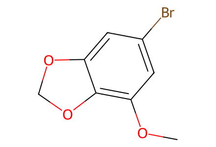
COc1cc(Br)cc2c1OCO2保留混合物产率、分离子样品及立体异构体。Gymnothelignan K 对应化合物 3；旧候选编号 17 不作为其身份依据。待独立专家复核。
完整 JSON · 逐步 CSV · 路线序列 · SDF · HRMS 核对
| 事件 | 分子连接 | 报告产率 | Canonical reaction SMILES |
|---|---|---|---|
| E01 | o-vanillin + diiodomethane → 10 | 10: 36% | COc1cccc(C=O)c1O.ICI>>COc1cc(Br)cc2c1OCO2 |
| E02 | 10 → 11a + 11b + 11c | 11a: 60%; 11b: 15%; 11c: 8% | COc1cc(Br)cc2c1OCO2>>COc1c(I)c(Br)c(I)c2c1OCO2.COc1c(I)c(Br)cc2c1OCO2.COc1cc(Br)c(I)c2c1OCO2 |
| E03 | 11a + 12 → 8a + 8b | 8a: 94%; 8b: 4% | COc1c(I)c(Br)cc2c1OCO2.COc1cc(B(O)O)cc(OC)c1OCc1ccccc1>>COc1cc(-c2c(Br)cc3c(c2OC)OCO3)cc(OC)c1OCc1ccccc1.COc1cc(-c2cc3c(c(OC)c2-c2cc(OC)c(OCc4ccccc4)c(OC)c2)OCO3)cc(OC)c1OCc1ccccc1 |
| E04 | 13-precursor + TBSCl → 13 | 13: 59% | C=C[C@H](C)[C@H](C)C(=O)N1C(=O)OC[C@@H]1c1ccccc1.CC(C)(C)[Si](C)(C)Cl>>C=C[C@H](C)[C@H](C)CO[Si](C)(C)C(C)(C)C |
| E05 | 13 + 8a → 7a + 7b | not reported | C=C[C@H](C)[C@H](C)CO[Si](C)(C)C(C)(C)C.COc1cc(-c2c(Br)cc3c(c2OC)OCO3)cc(OC)c1OCc1ccccc1>>COc1cc(-c2c([C@@H](O)[C@H](C)[C@H](C)CO[Si](C)(C)C(C)(C)C)cc3c(c2OC)OCO3)cc(OC)c1OCc1ccccc1.COc1cc(-c2c([C@H](O)[C@H](C)[C@H](C)CO[Si](C)(C)C(C)(C)C)cc3c(c2OC)OCO3)cc(OC)c1OCc1ccccc1 |
| E06 | 7a + 7b → 14 | 14: 70% | COc1cc(-c2c([C@@H](O)[C@H](C)[C@H](C)CO[Si](C)(C)C(C)(C)C)cc3c(c2OC)OCO3)cc(OC)c1OCc1ccccc1.COc1cc(-c2c([C@H](O)[C@H](C)[C@H](C)CO[Si](C)(C)C(C)(C)C)cc3c(c2OC)OCO3)cc(OC)c1OCc1ccccc1>>COc1cc(-c2c(C(=O)[C@H](C)[C@H](C)CO[Si](C)(C)C(C)(C)C)cc3c(c2OC)OCO3)cc(OC)c1OCc1ccccc1 |
| E07 | 14 → 7a + 7b | not reported | COc1cc(-c2c(C(=O)[C@H](C)[C@H](C)CO[Si](C)(C)C(C)(C)C)cc3c(c2OC)OCO3)cc(OC)c1OCc1ccccc1>>COc1cc(-c2c([C@@H](O)[C@H](C)[C@H](C)CO[Si](C)(C)C(C)(C)C)cc3c(c2OC)OCO3)cc(OC)c1OCc1ccccc1.COc1cc(-c2c([C@H](O)[C@H](C)[C@H](C)CO[Si](C)(C)C(C)(C)C)cc3c(c2OC)OCO3)cc(OC)c1OCc1ccccc1 |
| E08 | 7a + 7b → 6a + 6b | 6a: 34%; 6b: 43% | COc1cc(-c2c([C@@H](O)[C@H](C)[C@H](C)CO[Si](C)(C)C(C)(C)C)cc3c(c2OC)OCO3)cc(OC)c1OCc1ccccc1.COc1cc(-c2c([C@H](O)[C@H](C)[C@H](C)CO[Si](C)(C)C(C)(C)C)cc3c(c2OC)OCO3)cc(OC)c1OCc1ccccc1>>COc1cc(-c2c([C@@H]3OC(=O)[C@@H](C)[C@H]3C)cc3c(c2OC)OCO3)cc(OC)c1OCc1ccccc1.COc1cc(-c2c([C@H]3OC(=O)[C@@H](C)[C@H]3C)cc3c(c2OC)OCO3)cc(OC)c1OCc1ccccc1 |
| E09 | 7a → 6a | 6a: 89% | COc1cc(-c2c([C@H](O)[C@H](C)[C@H](C)CO[Si](C)(C)C(C)(C)C)cc3c(c2OC)OCO3)cc(OC)c1OCc1ccccc1>>COc1cc(-c2c([C@@H]3OC(=O)[C@@H](C)[C@H]3C)cc3c(c2OC)OCO3)cc(OC)c1OCc1ccccc1 |
| E10 | 6a → 1 + 1-epi | not reported | COc1cc(-c2c([C@@H]3OC(=O)[C@@H](C)[C@H]3C)cc3c(c2OC)OCO3)cc(OC)c1OCc1ccccc1>>COc1cc(-c2c([C@@H]3O[C@@H](O)[C@@H](C)[C@H]3C)cc3c(c2OC)OCO3)cc(OC)c1O.COc1cc(-c2c([C@@H]3O[C@H](O)[C@@H](C)[C@H]3C)cc3c(c2OC)OCO3)cc(OC)c1O |
| E11 | 6a + methanol → 2 + 15 | 2: 58%; 15: 11% | CO.COc1cc(-c2c([C@@H]3OC(=O)[C@@H](C)[C@H]3C)cc3c(c2OC)OCO3)cc(OC)c1OCc1ccccc1>>COc1cc(-c2c([C@@H]3O[C@@H](OC)[C@@H](C)[C@H]3C)cc3c(c2OC)OCO3)cc(OC)c1O.COc1cc(-c2c([C@@H]3O[C@H](OC)[C@@H](C)[C@H]3C)cc3c(c2OC)OCO3)cc(OC)c1O |
| E12 | 6a → 3 + 3-epi + 4 | 4: 8% | COc1cc(-c2c([C@@H]3OC(=O)[C@@H](C)[C@H]3C)cc3c(c2OC)OCO3)cc(OC)c1OCc1ccccc1>>COc1cc(-c2c([C@@H]3O[C@@H](O[C@H]4O[C@@H](c5cc6c(c(OC)c5-c5cc(OC)c(O)c(OC)c5)OCO6)[C@H](C)[C@@H]4C)[C@@H](C)[C@H]3C)cc3c(c2OC)OCO3)cc(OC)c1O.COc1cc(-c2c([C@@H]3O[C@H](O[C@H]4O[C@@H](c5cc6c(c(OC)c5-c5cc(OC)c(O)c(OC)c5)OCO6)[C@H](C)[C@@H]4C)[C@@H](C)[C@H]3C)cc3c(c2OC)OCO3)cc(OC)c1O.COc1cc2c(c(OC)c1O)[C@H]1O[C@@H](c3cc4c(c(OC)c3-2)OCO4)[C@H](C)[C@@H]1C |
| E13 | 6a → 4 | 4: 99% | COc1cc(-c2c([C@@H]3OC(=O)[C@@H](C)[C@H]3C)cc3c(c2OC)OCO3)cc(OC)c1OCc1ccccc1>>COc1cc2c(c(OC)c1O)[C@H]1O[C@@H](c3cc4c(c(OC)c3-2)OCO4)[C@H](C)[C@@H]1C |
| E14 | 6b → 20 + 20-epi | not reported | COc1cc(-c2c([C@H]3OC(=O)[C@@H](C)[C@H]3C)cc3c(c2OC)OCO3)cc(OC)c1OCc1ccccc1>>COc1cc(-c2c([C@H]3O[C@@H](O)[C@@H](C)[C@H]3C)cc3c(c2OC)OCO3)cc(OC)c1O.COc1cc(-c2c([C@H]3O[C@H](O)[C@@H](C)[C@H]3C)cc3c(c2OC)OCO3)cc(OC)c1O |
| E15 | 6b + methanol → 21 + 21-epi | not reported | CO.COc1cc(-c2c([C@H]3OC(=O)[C@@H](C)[C@H]3C)cc3c(c2OC)OCO3)cc(OC)c1OCc1ccccc1>>COc1cc(-c2c([C@H]3O[C@@H](OC)[C@@H](C)[C@H]3C)cc3c(c2OC)OCO3)cc(OC)c1O.COc1cc(-c2c([C@H]3O[C@H](OC)[C@@H](C)[C@H]3C)cc3c(c2OC)OCO3)cc(OC)c1O |
| E16 | 20 + 20-epi → 22 | not reported | COc1cc(-c2c([C@H]3O[C@@H](O)[C@@H](C)[C@H]3C)cc3c(c2OC)OCO3)cc(OC)c1O.COc1cc(-c2c([C@H]3O[C@H](O)[C@@H](C)[C@H]3C)cc3c(c2OC)OCO3)cc(OC)c1O>>COc1cc(-c2c([C@H]3O[C@H](O[C@H]4O[C@H](c5cc6c(c(OC)c5-c5cc(OC)c(O)c(OC)c5)OCO6)[C@H](C)[C@@H]4C)[C@@H](C)[C@H]3C)cc3c(c2OC)OCO3)cc(OC)c1O |
| E17 | 16 + 16-epi → 17 + 17-epi + 18 | not reported | COc1cc(-c2c([C@@H]3O[C@@H](O)[C@@H](C)[C@H]3C)cc(OC)c(OC)c2OC)cc(OC)c1O.COc1cc(-c2c([C@@H]3O[C@H](O)[C@@H](C)[C@H]3C)cc(OC)c(OC)c2OC)cc(OC)c1O>>COc1cc(-c2c([C@@H]3O[C@@H](O[C@H]4O[C@@H](c5cc(OC)c(OC)c(OC)c5-c5cc(OC)c(O)c(OC)c5)[C@H](C)[C@@H]4C)[C@@H](C)[C@H]3C)cc(OC)c(OC)c2OC)cc(OC)c1O.COc1cc(-c2c([C@@H]3O[C@H](O[C@H]4O[C@@H](c5cc(OC)c(OC)c(OC)c5-c5cc(OC)c(O)c(OC)c5)[C@H](C)[C@@H]4C)[C@@H](C)[C@H]3C)cc(OC)c(OC)c2OC)cc(OC)c1O.COc1cc2c(c(OC)c1O)[C@H]1O[C@@H](c3cc(OC)c(OC)c(OC)c3-2)[C@H](C)[C@@H]1C |
| E18 | 19 + acetic-anhydride + 16 → 18 | not reported | CC(=O)OC(C)=O.COc1cc(-c2c([C@@H]3O[C@H](O)[C@@H](C)[C@H]3C)cc(OC)c(OC)c2OC)cc(OC)c1O.COc1cc(-c2c([C@@H]3O[C@H](O)[C@@H](C)[C@H]3C)cc(OC)c(OC)c2OC)cc(OC)c1OCc1ccccc1>>COc1cc2c(c(OC)c1O)[C@H]1O[C@@H](c3cc(OC)c(OC)c(OC)c3-2)[C@H](C)[C@@H]1C |

COc1cc(Br)cc2c1OCO2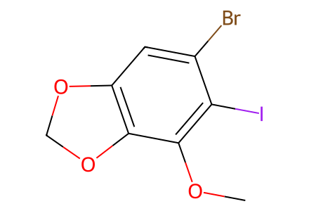
COc1c(I)c(Br)cc2c1OCO2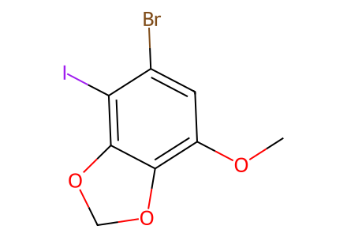
COc1cc(Br)c(I)c2c1OCO2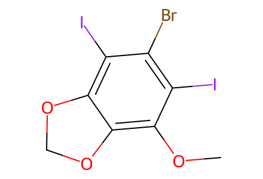
COc1c(I)c(Br)c(I)c2c1OCO2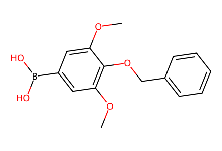
COc1cc(B(O)O)cc(OC)c1OCc1ccccc1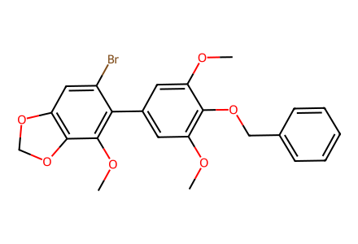
COc1cc(-c2c(Br)cc3c(c2OC)OCO3)cc(OC)c1OCc1ccccc1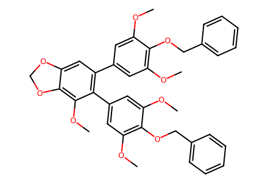
COc1cc(-c2cc3c(c(OC)c2-c2cc(OC)c(OCc4ccccc4)c(OC)c2)OCO3)cc(OC)c1OCc1ccccc1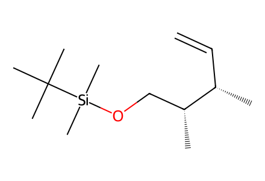
C=C[C@H](C)[C@H](C)CO[Si](C)(C)C(C)(C)C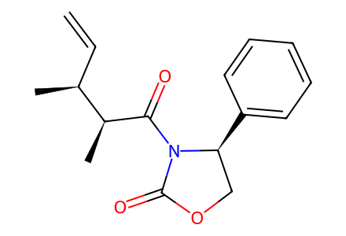
C=C[C@H](C)[C@H](C)C(=O)N1C(=O)OC[C@@H]1c1ccccc1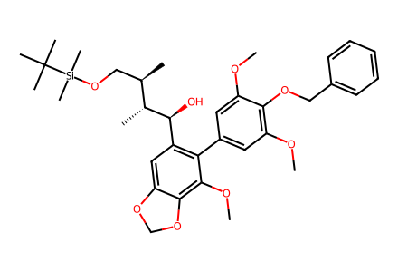
COc1cc(-c2c([C@H](O)[C@H](C)[C@H](C)CO[Si](C)(C)C(C)(C)C)cc3c(c2OC)OCO3)cc(OC)c1OCc1ccccc1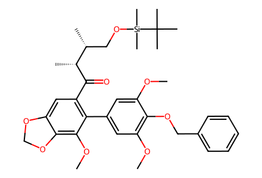
COc1cc(-c2c(C(=O)[C@H](C)[C@H](C)CO[Si](C)(C)C(C)(C)C)cc3c(c2OC)OCO3)cc(OC)c1OCc1ccccc1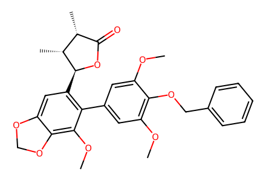
COc1cc(-c2c([C@@H]3OC(=O)[C@@H](C)[C@H]3C)cc3c(c2OC)OCO3)cc(OC)c1OCc1ccccc1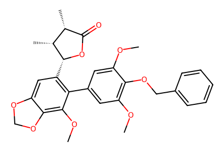
COc1cc(-c2c([C@H]3OC(=O)[C@@H](C)[C@H]3C)cc3c(c2OC)OCO3)cc(OC)c1OCc1ccccc1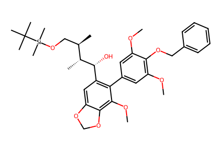
COc1cc(-c2c([C@@H](O)[C@H](C)[C@H](C)CO[Si](C)(C)C(C)(C)C)cc3c(c2OC)OCO3)cc(OC)c1OCc1ccccc1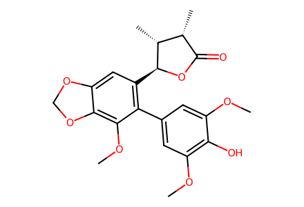
COc1cc(-c2c([C@@H]3OC(=O)[C@@H](C)[C@H]3C)cc3c(c2OC)OCO3)cc(OC)c1O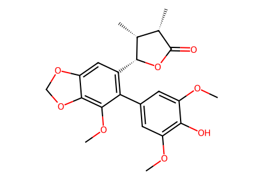
COc1cc(-c2c([C@H]3OC(=O)[C@@H](C)[C@H]3C)cc3c(c2OC)OCO3)cc(OC)c1O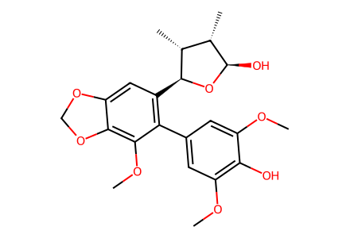
COc1cc(-c2c([C@@H]3O[C@H](O)[C@@H](C)[C@H]3C)cc3c(c2OC)OCO3)cc(OC)c1O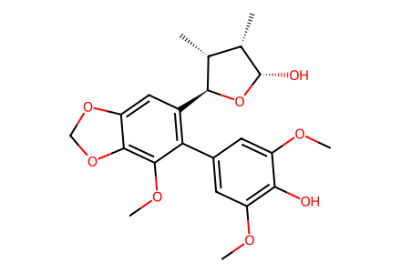
COc1cc(-c2c([C@@H]3O[C@@H](O)[C@@H](C)[C@H]3C)cc3c(c2OC)OCO3)cc(OC)c1O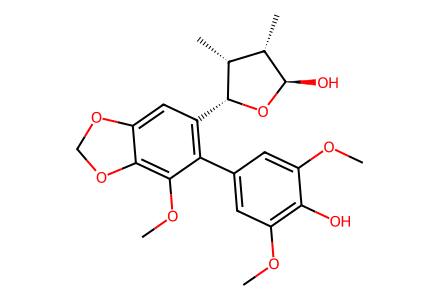
COc1cc(-c2c([C@H]3O[C@H](O)[C@@H](C)[C@H]3C)cc3c(c2OC)OCO3)cc(OC)c1O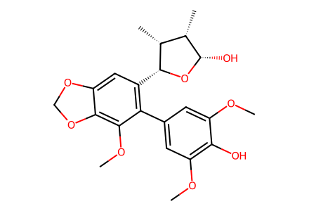
COc1cc(-c2c([C@H]3O[C@@H](O)[C@@H](C)[C@H]3C)cc3c(c2OC)OCO3)cc(OC)c1O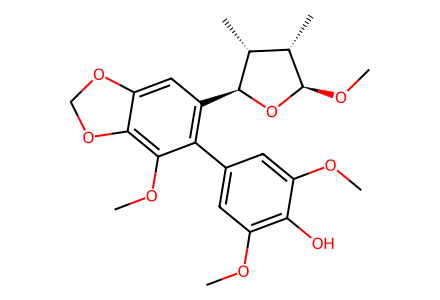
COc1cc(-c2c([C@@H]3O[C@H](OC)[C@@H](C)[C@H]3C)cc3c(c2OC)OCO3)cc(OC)c1O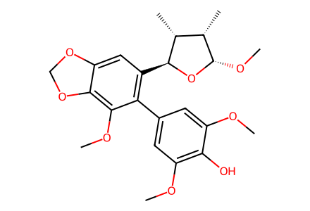
COc1cc(-c2c([C@@H]3O[C@@H](OC)[C@@H](C)[C@H]3C)cc3c(c2OC)OCO3)cc(OC)c1OCOc1cc(-c2c([C@H]3O[C@H](OC)[C@@H](C)[C@H]3C)cc3c(c2OC)OCO3)cc(OC)c1O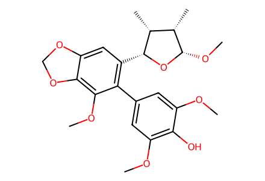
COc1cc(-c2c([C@H]3O[C@@H](OC)[C@@H](C)[C@H]3C)cc3c(c2OC)OCO3)cc(OC)c1O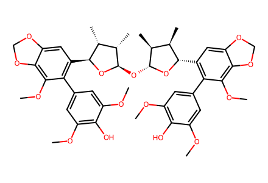
COc1cc(-c2c([C@@H]3O[C@H](O[C@H]4O[C@@H](c5cc6c(c(OC)c5-c5cc(OC)c(O)c(OC)c5)OCO6)[C@H](C)[C@@H]4C)[C@@H](C)[C@H]3C)cc3c(c2OC)OCO3)cc(OC)c1O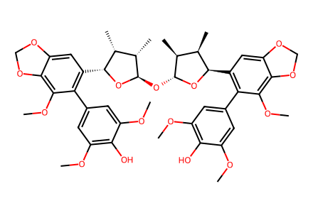
COc1cc(-c2c([C@H]3O[C@H](O[C@H]4O[C@H](c5cc6c(c(OC)c5-c5cc(OC)c(O)c(OC)c5)OCO6)[C@H](C)[C@@H]4C)[C@@H](C)[C@H]3C)cc3c(c2OC)OCO3)cc(OC)c1O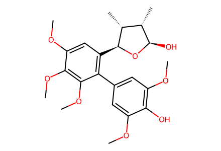
COc1cc(-c2c([C@@H]3O[C@H](O)[C@@H](C)[C@H]3C)cc(OC)c(OC)c2OC)cc(OC)c1O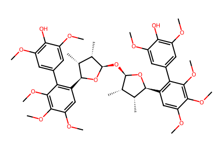
COc1cc(-c2c([C@@H]3O[C@H](O[C@H]4O[C@@H](c5cc(OC)c(OC)c(OC)c5-c5cc(OC)c(O)c(OC)c5)[C@H](C)[C@@H]4C)[C@@H](C)[C@H]3C)cc(OC)c(OC)c2OC)cc(OC)c1O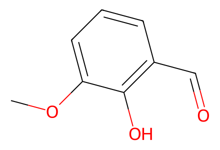
COc1cccc(C=O)c1O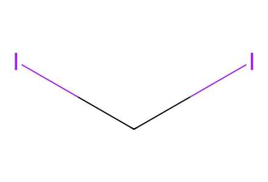
ICI
CC(C)(C)[Si](C)(C)Cl
CO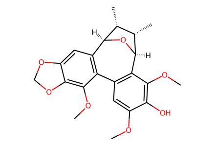
COc1cc2c(c(OC)c1O)[C@H]1O[C@@H](c3cc4c(c(OC)c3-2)OCO4)[C@H](C)[C@@H]1C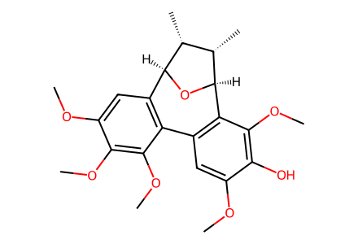
COc1cc2c(c(OC)c1O)[C@H]1O[C@@H](c3cc(OC)c(OC)c(OC)c3-2)[C@H](C)[C@@H]1C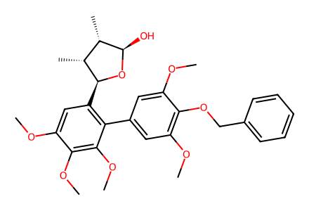
COc1cc(-c2c([C@@H]3O[C@H](O)[C@@H](C)[C@H]3C)cc(OC)c(OC)c2OC)cc(OC)c1OCc1ccccc1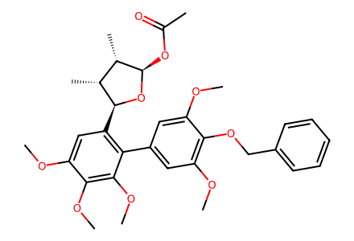
COc1cc(-c2c([C@@H]3O[C@H](OC(C)=O)[C@@H](C)[C@H]3C)cc(OC)c(OC)c2OC)cc(OC)c1OCc1ccccc1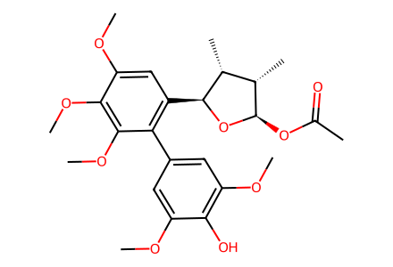
COc1cc(-c2c([C@@H]3O[C@H](OC(C)=O)[C@@H](C)[C@H]3C)cc(OC)c(OC)c2OC)cc(OC)c1O
CC(=O)OC(C)=O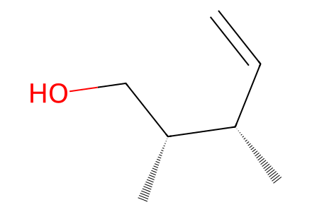
C=C[C@H](C)[C@H](C)CO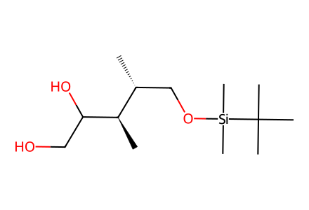
C[C@H](CO[Si](C)(C)C(C)(C)C)[C@@H](C)C(O)CO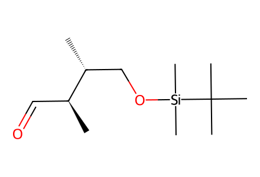
C[C@H](CO[Si](C)(C)C(C)(C)C)[C@@H](C)C=O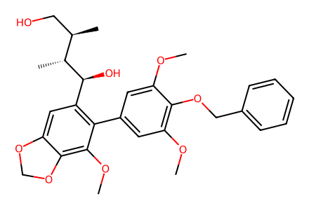
COc1cc(-c2c([C@H](O)[C@H](C)[C@H](C)CO)cc3c(c2OC)OCO3)cc(OC)c1OCc1ccccc1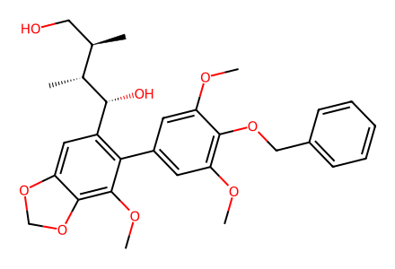
COc1cc(-c2c([C@@H](O)[C@H](C)[C@H](C)CO)cc3c(c2OC)OCO3)cc(OC)c1OCc1ccccc1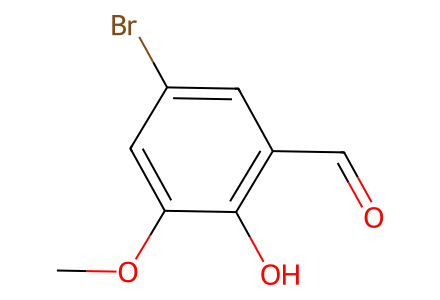
COc1cc(Br)cc(C=O)c1O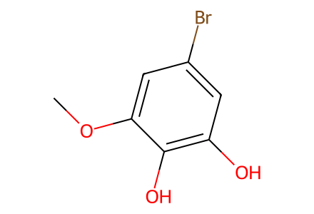
COc1cc(Br)cc(O)c1O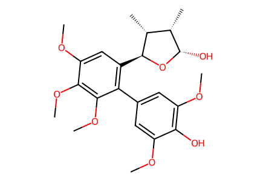
COc1cc(-c2c([C@@H]3O[C@@H](O)[C@@H](C)[C@H]3C)cc(OC)c(OC)c2OC)cc(OC)c1OCOc1cc(-c2c([C@@H]3O[C@@H](O[C@H]4O[C@@H](c5cc6c(c(OC)c5-c5cc(OC)c(O)c(OC)c5)OCO6)[C@H](C)[C@@H]4C)[C@@H](C)[C@H]3C)cc3c(c2OC)OCO3)cc(OC)c1O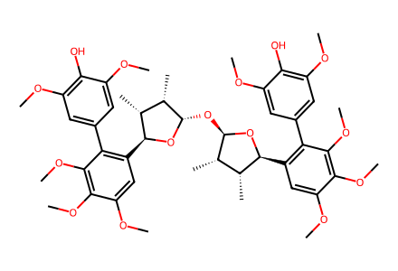
COc1cc(-c2c([C@@H]3O[C@@H](O[C@H]4O[C@@H](c5cc(OC)c(OC)c(OC)c5-c5cc(OC)c(O)c(OC)c5)[C@H](C)[C@@H]4C)[C@@H](C)[C@H]3C)cc(OC)c(OC)c2OC)cc(OC)c1O